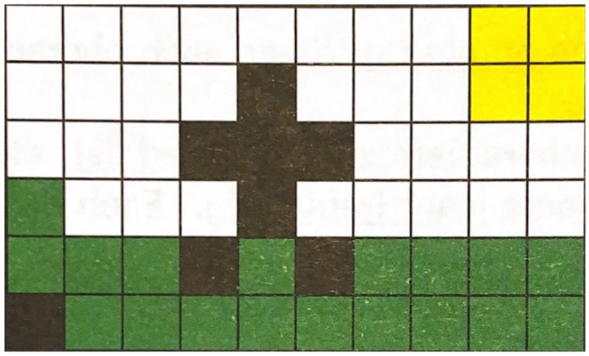
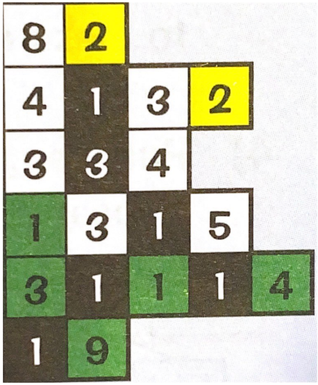
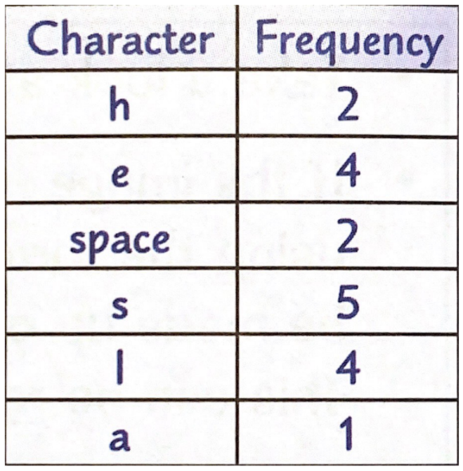
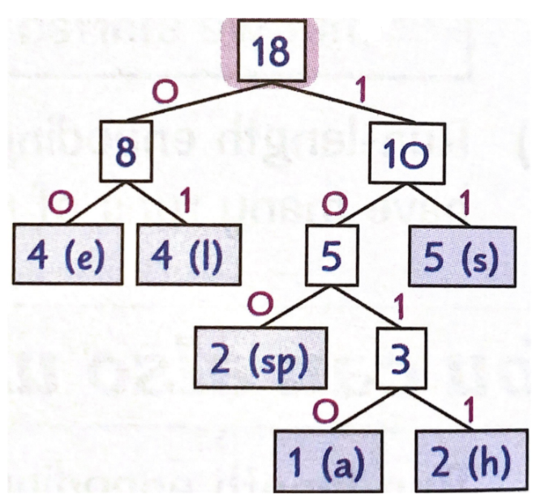

Why Data Files Are Compressed:
- Files will take up less storage space on a device.
- Streaming and downloading files from the internet is faster because they take up less bandwidth.
- Web pages load faster in web browsers.
- Many messaging services have limits to the size of a file being sent therefore, compressing a file will allow you to send the same file.
Lossy Compression:
Description:
- Lossy compression Permanently removes data from a file.
- This permanent removal of data limits the number of bits the file needs reducing the size of the file.
Advantages:
- Reduces the file size immensely so more files can be stored on that same device.
- Lossy compressed files can be downloaded more quickly because they take up less bandwidth.
Disadvantages:
- Lossy compression PERMANENTLY loses data that can never be restored.
- Lossy compression only does not work on files that cannot lose data permanently like text or software files.
- Lossy files are worse quality to the original but tis quality change is usually unoticeable.
Examples:
- JPEG (Images)
- MP3 (Audio)
lossless Compression:
Description:
- Lossless compression makes a file smaller by temporarily removing data.
- This temporary removal of data occurs when the file is being stored but is then restored to the original file when it is opened.
Advantages:
- Data is only temporarily removed so there will be no quality loss when the file is opened.
- Lossless files can be decompressed unlike lossy file.
- Lossless compression can take place on all types of files including text and software files unlike lossy compression.
Disadvantages:
- There is only a slight reduction in file size so files that were lossy compressed will take up less space than lossless compressed files.
Examples:
Run Length Encoding:
Description:
- RLE is a form of lossless compression so it reduces a file's size without losing any data or quality.
- It works by carrying out Runs. A run is where it looks for consecutive repeating data in a file.
- Instead of storing each piece of data seperately, it stores the number of times a piece of data is repeated.
For Example:

- For example, if the image above uses an 8-bit colour depth, the file size would be 480 bits. This can be reduced by using RLE.
- First of all, count the number of times the same data is repeated in each run and store this:

- Next, store this information is pairs in the format: (Number of pixels, Colour)
- In this example, there are 20 pairs to store. Each pair contains a number that is stored as an 8-bit binary number and an 8-bit colour (8-bit colour depth) - so 8+8 = 16 bits in total
- The final compressed image would be 20 X 16 = 320 Bits
- So,140 bits would be saved by compressing the image using RLE
Disadvantages:
- Sometimes however, RLE can increase the file size of an image, this can happen when the data does not have many repeated runs of data.
Huffman Coding:
Description:
- Data in regular files take up the same amount of space which is often inefficient.
- Huffman coding stops this by giving each data value in a file a unique binary code but with varied lengths where values that appear less frequently will have shorter binary codes.
For Example:
- If we wanted to encode "He sells seashells".
- We would start off by counting the number of times each character occurs starting with most to least frequent and put this information into a table:

- Next, take the 2 least frequent characters and put them into an ordered list where the smaller frequency is ALWAYS on the lEFT. Add the frequencies and place the sum on top of them.
- Repeat this process with the remaining characters. At the end, label the final huffman tree branches by labeling all left branches "0" and all the right branches "1":

- So, "He sells seashells" would be encoded as:
- 1011001001100010
11110011001010111
01100010111 = 44 bits